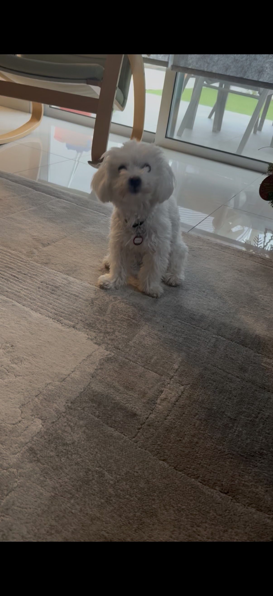

This is Ivi!A mini maltese dog who is 1 years old.she loves eating food and running around in the garden.Ivi is a tiny, one-year-old Mini Maltese with a gentle, sweet presence. She has soft, cloud-like white fur that makes her look delicate and elegant, yet she’s full of playful puppy energy. Her dark, round eyes are bright and expressive, always watching you closely as if she understands everything you say.
Having a dog is speacial because Having a female dog as a teen girl can be really meaningful for several reasons. First, it can foster a sense of responsibility. Taking care of a dog, whether it’s feeding, walking, or grooming, helps develop maturity and time management skills. Plus, a dog offers emotional support—dogs are incredibly intuitive and can sense when you're feeling down. They can be comforting companions, especially during the ups and downs of adolescence.